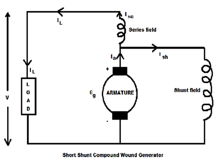
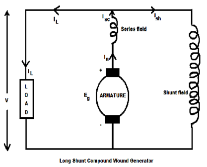

In compound wound DC generators both the field windings are combined (series and shunt). This type of generators can be used as either long shunt or short shunt compound wound generators as shown in the diagram below. In both the cases the external characteristic of the generator will be nearly same. The compound wound generators may be cumulatively compounded or differentially compounded (discussed earlier in the type of generators). Differentially compound wound generators are very rarely used. So, here we mainly concentrate upon the characteristic of cumulatively compound wound generators.

We all know that, in series wound DC generators, the output voltage is directly proportional with load current and in shunt wound DC generators, output voltage is inversely proportional with load current. The electric current in the shunt field winding produces a flux which causes a fall in terminal voltage due to armature reaction and ohmic drop in the circuit. But the electric current in the series field also produces a flux which opposes the shunt field flux and compensate the drop in the terminal voltage and try to operate the machine at constant voltage.

The combination of a series generator and a shunt generator gives the characteristic of a cumulative compound wound generator.
At no load condition there is no electric current in the series field because the load terminals are open circuited. But the shunt field electric current helps to produce field flux and excite the machine. When the dc generator supplies load, the load current increases and electric current flows through the series field. Therefore, series field also provides some field flux and emf is also increased. The voltage drop in the shunt machine is therefore compensated by the voltage rise in the series machine.
External characteristic of DC compound wound generator is drawn between the terminal voltage and the load current.By adjusting the no. of amp-turns in the series field winding we can get following external characteristics:
1. If the series turns are so adjusted that with the increase in load current the terminal voltage also increases, then the generator is called over compounded. The curve AB in the figure showing this characteristic. When the load current increases then the flux provides by the series field also increases. It gives the additional generated voltage. If the increase in generated voltage is greater than the voltage drops due to armature reaction and ohmic drop then, terminal voltage of the generator is increased.
2. If the series turns are so adjusted that with the increase in load current the terminal voltage remains constant, then the generator is called flat compounded. The curve AC in the figure showing this characteristic. When the load current increases then the flux provides by the series field also increases and gives the additional generated voltage. If the increase in generated voltage is equal to the voltage drops due to armature reaction and ohmic drop then, rated terminal voltage of the generator remains same as no load voltage.
3. If the series field winding has lesser no. of turns then the rated terminal voltage becomes less than the no load voltage, then the generator is called under compounded. Because, the increase in generated voltage is lesser than the voltage drops due to armature reaction and ohmic drop. Curve AD in the figure is showing this characteristic.
Characteristics of DC Compound Generator
For small distance operation the flat compounded generators are generally used because the length of the feeder is negligible. But to maintain constant voltage over a long period, the over compounded generators are used. It works as a generator and a booster (boost the terminal voltage).
 by
by